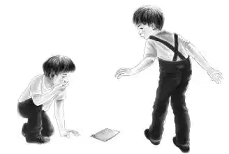

Mrs. McGregor’s Clue

杰西和亨利好奇地环视着海家兄弟和班尼、维莉发现的小屋。在午后阳光的映照下，屋子里看起来明亮得多，也显得没那么诡异了。只见那只巨大的摇摆木马还保持了几分它原有的炫丽色彩。
“我们该怎样入手找线索呢？”塞米问道。
亨利回答说：“假定这张床就是你们兄弟俩的，仔细检查一下，不要漏掉任何蛛丝马迹，必要时把铺盖和床垫全都掀开。”
塞米说道：“我明白了，或许床垫下面藏着什么东西。小杰，开始找吧。”
“你们要注意安全哦！”杰西叮嘱道，“要知道这都是些老古董，有的可能都烂掉了。”
亨利说道：“维莉和杰西可以检查一下桌子。我和班尼察看其余的地方。”
小杰和塞米把床从墙边拉开，抱走毯子，抖了抖枕头，然后将床单扯开，检查起床垫来。
过了一小会儿，小杰说：“我猜这里不会有什么线索。”
“那就把东西全部归位吧！”维莉说道。
就在塞米把枕头放回去的时候，他突然停了下来。
“我们刚才没注意到这个！快看，枕套上有几个字母。”
大家连忙凑过去瞧，只见一个小型十字刺绣上刺有两个字母：W和C。
“C肯定代表卡韦，”小杰说，“那W代表什么？”
“快想想！”班尼说道，“或许W是小男孩名字的缩写，可能是沃尔特，或威廉。”
“或者是沃利，”塞米说道，“咱们再找找吧，说不定还能找到其他东西。”
维莉和杰西搜遍了书桌的每一个抽屉，里面空荡荡的。维莉不甘心地把手伸进抽屉最里面的空档，希望能发现暗格什么的，却依然一无所获。

杰西仔细地观察着书桌表面。
“快看这里——是用小刀刻在桌面上的字母。刻得不是很清楚，让我看看：这是W，这个肯定是I。”
维莉伸过头去也瞧了瞧。
“有两个L和一个Y。”她说。
“威廉！”所有人异口同声地大叫出来。
“我敢打赌，那个小男孩叫威廉，”塞米说道，“这就和枕套上的大写字母对应起来了。”
接下来，班尼和亨利搜遍了所有的门和窗户，却再无发现。他们仔细查看着那些旧玩具，连红拖鞋也晃了晃，还是没有发现任何线索。
杰西说道：“维莉，我们把抽屉放回去吧。全是空的，真遗憾。”
大大的摇摆木马显眼地立在房间中央。塞米轻轻拍了拍它的头，又顺着马的鬃毛摸了摸，最后摸了摸马鞍。
“有了，”他欣喜地叫道，“我觉得马鞍可以卸下来。快，帮我解开这个扣子。”
大家赶紧围拢过来，维莉松开了扣子，班尼帮小杰卸下马鞍，旋即，一样东西从马背上滑落下来，轻轻飘落到地上。
塞米匍匐在马腿间，小心翼翼地捡起那张纸，把它递给杰西。
“给你，杰西，”他说，“我怕把它弄破了。”
“我更是连碰都不敢碰呢！”杰西说着，接过那张折叠后的纸。
“这是本小书，”她说，“只有四页纸长。”
这张纸被折了两次，用一个生锈的别针别住，组装成了一本小书。
塞米说道：“有人在封面上画了一张摇摆木马的图。”
没错，的确有一张木马图，底下写着“我的小马驹”。
杰西小心翼翼地翻开纸书。
“好像是个故事呢！”她推测道。
“快读出来啊！”塞米说道。
“是啊，快读出来吧。”他们一齐央求道。
笔迹褪色了，只能依稀辨认，于是杰西只能慢慢地读出来。
“这是一个真实的故事，”她缓缓道来，“是威廉最喜欢的故事。很久以前，有个小男孩叫威廉，每年夏天他都会来卡韦奶奶家。奶奶很喜欢他，专门为他在屋顶下布置了一间小房，威廉很爱他的小屋。”
维莉说道：“噢，杰西，一定是有人专门为威廉写下了这个故事，估计是他喜欢的睡前故事。快，继续念下去。”
杰西接着往下读。
“威廉在奶奶家有很多特别的玩具，其中最独特的就是摇摆木马。它放在奶奶家好多年了，许多小男孩都骑过。现在，威廉很喜欢骑在上面，他叫它‘我的小马驹’。完结。”
“就这些吗？”小杰问道。
“是呀，”杰西回答，“没有了。”
“现在，有两个线索了，”班尼说道，“我们知道了小男孩的名字，还有他是来这儿看望奶奶，而不是常住在这里的。不过，小屋为什么被封了呢？”
“嗯，这仍是个未解之谜。”亨利回答。
班尼仔细翻看着他和亨利找到的所有玩偶，聚精会神地观察着小皮球、玩具号角和小型火车引擎，突然，有件东西让他的脚步停滞住了。
“等等，”班尼说道，“我有灵感了，是小号角启发了我。”
所有人都满怀期待地盯着他，神色肃然，倒是班尼轻松地笑了起来：“记得我们什么时候做的大杂烩吗？”
“记得呀，”杰西回应道，“不过，这和密室有什么关系？”
“麦格雷戈太太！”班尼高兴地叫道，“我猜到啦！她告诉过我们，在她还是个小女孩的时候，曾受邀来这栋房子参加生日聚会。她还记得有关玩具号角和小男孩的事。”
“肯定是威廉·卡韦的派对！”维莉说道，“如果我们告诉她这些，或许她就能记起更多的事情来。”
“快，”班尼说道：“我们给她这个号角，看看会发生什么。”
此时，麦格雷戈太太正在厨房里，手上沾满了面粉，她笑容可掬地望着小家伙们，听着他们的故事，拿起了那个旧玩具号角。
“哦，我的天啊！”她说，“我怎么能忘记这个玩具呢？这是那个小男孩收到的生日礼物——穿水手服的男孩。”
“太好啦！”班尼说道，“这可是一个很有用的线索。”
麦格雷戈太太仍拿着那个小号角，“真希望我能告诉你们更多的事儿。”
“您已经告诉我们够多啦！”维莉说道，“或许，要是知道派对是何时举行的，会对我们有所帮助，至少能弄清楚海之屋在哪个时期有人住。”
“没错。”亨利说道。
麦格雷戈太太沉思了一会儿。
“让我想想，那事儿发生在我们搬去农场之前，当时我才五岁，所以，派对一定是我四岁时举办的，当年大概1910年——对，就是1910年的夏天。我确定当时是夏天，那时我还戴着一顶太阳帽呐！”
“有名字和日期了，”班尼说道，“这应该很有用。不过，我还不清楚对揭开谜底有什么帮助。”
麦格雷戈太太说：“恐怕我能告诉你们的只有这些了。真希望我能认识其他记得卡韦家的人，他们在绿野镇可是举足轻重的人物，不过很久以前就搬走了。”
“我们到树屋上去想想吧，”塞米说道，“班尼，你也一起来。”
于是，班尼和塞米、小杰一起回海之屋了。海夫人看到，他们一个接一个地爬到树屋上。
“发生什么事了？”海夫人问道。
“我们要考虑些问题，”塞米回答，“但是暂时还没什么头绪。”
小杰补充道：“我们已经有了一些线索，但还不知道应该怎样利用。我们就是想不明白，那间屋子为什么被封起来了。”
“和我说说你们目前所知道的情况吧！”海夫人说。
男孩们告诉她，密室是威廉·卡韦的房间，他在1910年的夏天曾来这里看望奶奶。
“不过，那发生在好久以前，没有人记得当时发生的事。”小杰说。
“在绿野镇，已经没有任何卡韦家族的人了。”班尼说道。
海夫人说：“可这并不意味着你们就要停止寻找啊！我正在写一本书，涉及的可是1685年来美国的人呢，我已经找到很多他们的信息了。所以，你们需要知道的是，从哪儿下手。”
“从哪儿下手？”班尼重复了一遍，旋即，他明白了海夫人的意思。
“我知道啦！”他兴奋地喊道，“去图书馆！”